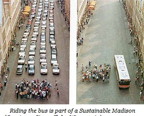

Good public transit is an important element of a sustainable city. But what does “sustainable” mean?
Madison’s 2011 Sustainability Plan
defines sustainability “as meeting the current environmental, social and economic needs of our community while
ensuring the ability of future generations to meet their needs” (p. 1). And it suggests that “a healthy environment
underpins economic and social well-being.” At the end, we question the wisdom of that assertion but suspend our
naturally argumentative nature long enough to consider how transit may be part of a healthy environment.
It is possible to rattle off a “laundry list” of environmental concerns
that could be either alleviated or minimized by traveling
by bus instead of by Single Occupancy Vehicle automobile (SOV): air and water pollution, open space and habitat
destruction; climate change; energy over-consumption, and fossil fuel consumption to name a few.
For many, the issue of climate change is enough to convince them that using public transit is good for the
environment. If an individual switches a 20-mile round trip commute to public transportation, his or her annual
carbon dioxide emissions can decrease by 4,800 pounds per year, equal to a 10 percent reduction in a typical two-car
household’s carbon footprint.
On the individual level, EnAct, a community program of Madison Environmental Group,
LLC designed to provide individuals and households tips for living in an environmentally sustainable fashion, states in
its manual, “Driving less is the most significant action we can take to alleviate local and global environmental
problems.” It suggests that before hopping into a car for a Single Occupancy Vehicle ride, people concerned about
their ecological footprint should consider walking, biking, ride sharing or taking transit instead.
In a step up from individual or household-level action, the Sustainability Plan suggests that Madison should “expand
the number of neighborhoods where sustainable transportation choices enable mobility without a car” (p.22) and
various Neighborhood Associations have tried to comply.
The Schenk-Atwood-Starkweather-Yahara (SASY) neighborhood of about 6,000 residents has an initiative called
Sustainable Atwood . One project is the Commute Card, which allows SASY residents to sign up for a bus pass similar to those of employees and students at several major institutions in Madison. Sponsored by Madison Metro Transit and
administered by the neighborhood for a $10 annual fee, the card is charged $1.25 every time it is swiped through a
fare meter. Neighborhood participants are charged each month for all the rides they took with the card. Could this
example be a model to be emulated?
Madison’s Sustainability Plan has many transportation-related recommendations for policies on the city level (p.22)
including:
- Assess need for expanding Madison Metro service to offer 24-hour/7 days a week service on core routes at a
minimum;
- Implement simplified bus route numbering system to allow consistent planning;
- Establish Bus Rapid Transit (BRT) and Metro express service;
- Create policies and procedures that require all new developments to include a Transportation Demand Management
Plan that prioritizes all transportation modes;
- Require events that are granted either a park use or street use permit, and that anticipate attendance over 200 people,
have a TDM plan;
- Build sustainable transportation funding options into the beginning stages of new development plans;
- Create a comfortable and convenient downtown center for sustainable travel, multimodal transit throughout the City
and region; and
- Provide better security and enhance the bus riding experience by creating kiosks/commercial space at transit
transfer points or relocate transfer points.
What a wish list! It is curious that that list overlaps with that of the Madison Area Bus Advocates in so many ways.
However, the words of Jane Goodall at this year’s Earth Day Conference put on by the UW’s Nelson Institute kept echoing. She suggested that the best way to preserve habitat for chimpanzees was to find solutions to the needs of villagers living nearby who might otherwise destroy that habitat in an effort to satisfy their needs. In doing that, not only would the villagers be
more satisfied, but the chimpanzees would still have their forest—a “win-win.”
The point? In an interdependent world, economic and social well-being may underpin a healthy environment as much
as a healthy environment may underpin economic and social well-being. Fortunately, good public transportation is an
important element of all three sustainability components.
 Madison Area Bus Advocates
Madison Area Bus Advocates